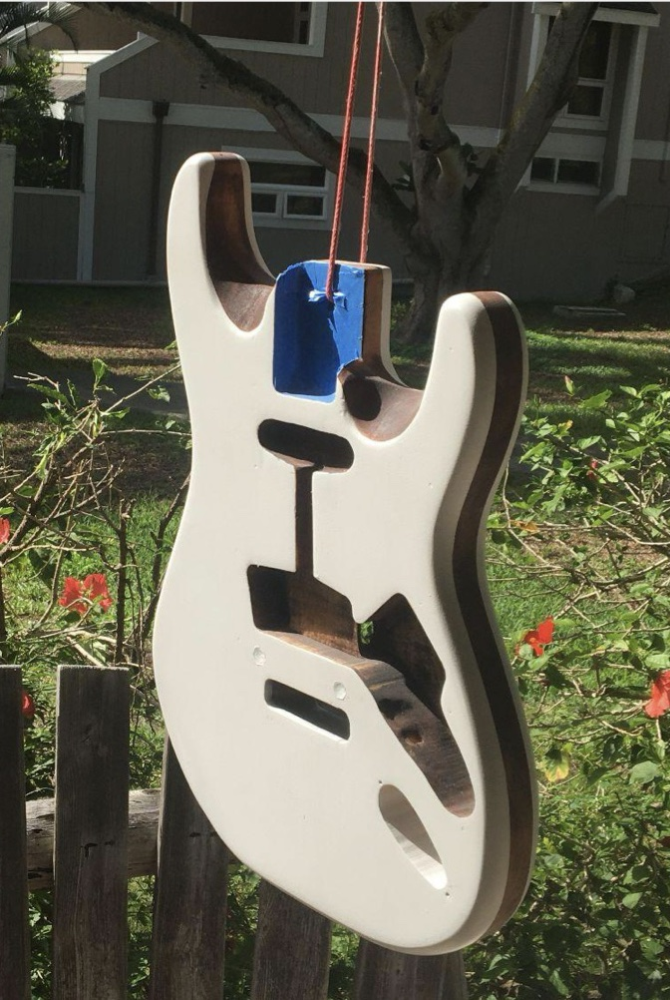
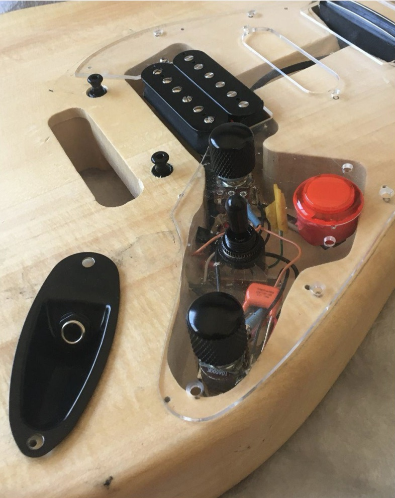

Electronics · woodworking · design
Custom Electric Guitar
Started as a simple Stratocaster kit. I designed the wiring harness, reshaped the body and neck, and painted it.
Build photos





Problem
Nothing on the market met my requirements, and the guitars that came close were expensive. Most electric guitars offer only 3–5 pickup combinations (bridge, neck, and blends of the two). I wanted to pull each humbucker in and out of phase, both internally and relative to the other pickup, and to split humbuckers into single coils, so one instrument could cover every genre. I also did not want to buy a different guitar for every task, which is the consumption pattern the industry encourages.
Requirements
- Selectable phase for each humbucker, and phase relationship between pickups.
- Coil-split each humbucker to a single coil.
- Cover many musical styles from one instrument at a fraction of the cost of buying several.
- A momentary kill switch for performance effects.
What I did
Started from a basic Stratocaster-style kit and re-engineered the electronics, body, and neck. I designed a custom wiring harness, modified the neck profile and body for upper-fret access, routed the body for a second pickup and its wiring, finished it, and assembled a playable instrument.
How
Electronics
- Selected a rail humbucker for the neck position and a standard humbucker for the bridge, plus the harness switching to phase and split them.
- Switching: a five-way pickup selector, with the volume and tone controls built as push-pull potentiometers that each carry a DPDT switch. Pulling a knob changes the wiring (phase or coil-split) without adding more switches to the body.
- Drew schematics and designed the harness to support more than 40 pickup and phase combinations from this switch set.
- Added a momentary kill switch (the red button) that short-circuits the signal for as long as it is held, silencing the output.
- Used a clear cover plate over the control cavity so the wiring is visible.
Body and neck
- The body blank was only drilled for the bridge pickup. I routed a cavity for the neck pickup and a wiring channel connecting it to the control cavity, using a Dremel.
- Reduced the neck thickness and carved the body where it meets the neck to give more hand clearance around the higher frets.
Finish and assembly
- Sanded through multiple grits with a random-orbit sander, then applied wood dye and spray paint.
- Fitted a locking tremolo bridge and assembled the instrument.
Results
- A fully assembled, playable guitar with a pickup system that goes well beyond the standard 3–5 combinations, including in-phase, out-of-phase, and coil-split options.
- Debugging: early builds had grounding problems in the wiring, which I diagnosed and corrected.
- Scope decision: after living with the instrument I found I would never use most of the 40+ combinations, so I scaled the harness back to the useful set. This is a requirements lesson: build for the combinations that get used, not the maximum that is possible.
- Reached a custom, multi-voice instrument for a fraction of the cost of buying several guitars.
Tools: Dremel, random-orbit sander, soldering, wood dye and spray finishing.